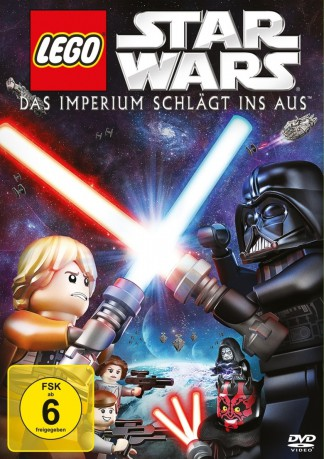

#1044 Lego Star Wars: The Empire Strikes Out
 gesehen am 20.05.2015
gesehen am 20.05.2015
 
 IMDB-Wertung: 7.4 / 10
IMDB-Wertung: 7.4 / 10  Metascore: 0
Metascore: 0 
Die Helden der „Rebellen- Allianz“ müssen wieder einmal die Galaxie retten! Luke Skywalker, Han Solo und Prinzessin Leia haben keine Zeit ihren letzten Sieg über das Imperium zu feiern, denn schon gibt es eine neue dunkle Bedrohung. Für Jedi-Schüler Luke entpuppt sich dabei sein Ruf als „Todesstern-Zerstörer“ als ein zweischneidiges Lichtschwert, denn seine verrückten Fans verfolgen ihn auf Schritt und Tritt – so viel zu „geheimen Missionen“. Indessen streiten Darth Vader und Darth Maul erbittert um die Gunst des Imperators… bis die Steine fallen! Eine witzige Geschichte galaktischen Ausmaßes – vielleicht etwas kleiner, aber garantiert nicht von dieser Welt. Quelle: amazon.de
Jahr: 2012
Dauer: 22 Minuten
FSK: 6
Land: USA Studio: Cartoon NetworkTonspuren: DD5.1 - ,
Untertitel:
Auflösung: 1080p (1920x1080) Größe: 792 MB
Genre: Animation/Trick, Kurzfilm, Action, Komödie, Familie, Sci-Fi
Regisseur: Guy Vasilovich
Drehbuch: Michael Price, George Lucas, Ole Kirk Christiansen, Godtfred Kirk Christiansen, Jens Nygaard Knudsen
Soundtrack:
Darsteller:
 Anthony Daniels als C-3PO
Anthony Daniels als C-3PO Kenneth Colley als Admiral Piett
Kenneth Colley als Admiral Piett Brian Blessed als Boss Nass
Brian Blessed als Boss Nass Julian Glover als General Veers
Julian Glover als General Veers Ahmed Best als Jar Jar Binks
Ahmed Best als Jar Jar Binks- Lisa Fuson als Princess Leia Organa
 Tom Kane als Narrator / Yoda
Tom Kane als Narrator / Yoda Sam Witwer als Darth Maul / Emperor Palpatine
Sam Witwer als Darth Maul / Emperor Palpatine- Lloyd Floyd als Luke Skywalker
- Matt Sloan als Darth Vader
- John Armstrong als Han Solo
- Andy Secombe als Watto
- Robert Dennis als
- Robert Dennis als
- Jason Canning als Admiral Ozzel
- Yazmin Monet Watkins als
- Dennis Edwards als The Emperor
Datei: X:\Kinder Collections\LEGO\Lego Star Wars The Empire Strikes Out (2012, FSK6, 1920x1080).mkv seit 15.05.2015
Festplatte: Kinder-Filme+Trick
 Es gibt insgesamt 34 Filme in der Gruppe 'Kinder Collections\LEGO'
Es gibt insgesamt 34 Filme in der Gruppe 'Kinder Collections\LEGO'